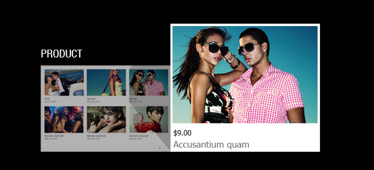
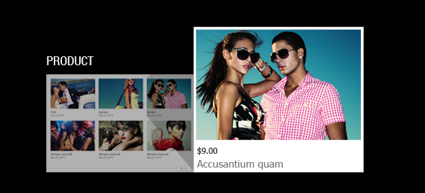

Responsive Category Slider
Documentation
- themelead.com
- Latest Update: August 5th 2014
- By: ThemeLead
- http://themelead.com
- Email: support@themelead.com
For support please checkout ThemeLead SUPPORT
INTRODUCTION
1. General information
We would like to thank you for purchasing Responsive Category Slider! We are very pleased you have chosen Responsive Category Slider for your website, you will not be disappointed! Before you get started, please be sure to always check out these documentation files. We outline all kinds of good information, and provide you with all the details you need to use this plugin. It can only be used with WordPress and we assume that you already have WordPress installed and ready to go. If you do not, please visit our website for professional support to help you get started. If you are unable to find your answer here in our documentation, we encourage you to search our Tutorials on ThemeLead. Thank you, we hope you enjoy using Responsive Category Slider!
2. Outstanding Features (PRO version only)
2.1. Responsive Design
2.2. Mobile Style Support
With a flexibility focus on our product, we also support mobile style for the slider. Your slider has not only responsive layout but also its own mobile style on mobile devices. Your website always looks great and bring your visitors ultimate experience.
2.3. 3 Different Styles of Menu Switch
You can always choose between styles of the slider for your website. We listen to our customers and will never disappoint. Everything is customizable.
- Horizontal Menu
- Vertical Menu
- Hidden Menu
- Sub Style of Horizontal Menu: Drop Down Menu
2.4. 5 Different Display Styles
- Post
Do you get tired of choosing which posts display on your homepage? Don’t worry, we help you bring all of them out but according to consolidated way.
- Event
Organize your events into different categories. You visitors do not need to go inside your event page with a lot of confused information. Now they can easily browse your events which already divided in categories.
- Product (Woo CommerceIntegrated)
You are trying sell as many products as you can but your customers take too much time in order to find only one product they want to buy! This plugin help you not only put your whole lot content into categories but also integrate with an amazing plugin for ecommerce website: WooCommerce.
- Gallery
We always give you product with high customization. Category Slider is not an exception. The last style you can choose is the “Gallery” style which will bring you the best for your photography site.
- News
Try to make some differences for the news section on your site? Look no further because the News style of this unique WordPress content slider will transform your posts to mordern designed and endless scrolling slider.
 

2.5. Taxonomy Selection Support
You want your content not only to be rich but also organized. WordPress has been supporting a feature called “taxonomy” which refers to is a grouping mechanism for some posts. Our Plugin is made for your WordPress site with a full support of this amazing feature.
2.6. Tag Selection Support
If Taxonomy is not enough for you, WordPress also support an extra feature: Tag. It has freeform that can made up on fly. Responsive Category Slider Pro support this feature which make everything easy for you. More and more you receive from using our product.
2.7. Category ID/ Slug Selection
By default, the slider will auto-feed posts from all categories. Yet you can choose specific Category by its own ID and Slug. We always want to give you products that easy to customize.
2.8. Custom Post Type Support
We give you the best benefits of using WordPress and our product. Category Slider not only support default features but also extra feature of WordPress. You can customize as you always wanted which fit the most your need.
2.9. AJAX Support
Have you heard about AJAX Technology in WordPress before?AJAX (Asynchronous JavaScript and XML) is a technology that allows a web page to perform actions or update dynamically, without completely reloading. With full support of this technology, Category Slider offers you a fast responsiveness for your website.
2.10. Custom Layout
Are you tired of using the same style for everything?The plugin is highly customizable. Relax and take your time to make your slider become outstanding as it should with your own layout!
| Features | PRO version | FREE version | |||
| Responsive Design | x | x | |||
| 3 Different Styles of Menu Switch | x | Vertical only | |||
| Unlimited Menus and Posts | x (Post, Events, Gallery, Product and News and sub-style: Drop down Menu). | Limited Menus and Posts | |||
| Support 2 configuration styles (Widgets, Shortcode) | x | Limited Menus and Posts | |||
| Custom Layout | x (You can customize almost everything: background color, width of menu, text color, border, etc). | ||||
| Auto-cropped featured image | x Support extra features: select among 3 different ratios). | x (Fixed ratio) | |||
SYSTEM REQUIREMENT
Requirements of Responsive Category Slider (both PRO and FREE version).
To use Responsive Category Slider, you must be running WordPress 3.1 or higher, PHP5 or higher, and mySQL 5 or higher. We have tested it with Mac, Windows and Linux. Below are a list of items you should ensure your host can comply with.
- Check to ensure that your web host has the minimum requirements to run WordPress.
- Always make sure they are running the latest version of WordPress
-
- You can download the latest release of WordPress from official WordPress website
- Always create secure passwords FTP and Database
Hosting is more secure when PHP applications, like WordPress, are run using your account’s username instead of the server’s default shared username (www or www-data). The most common way for hosting companies to do this is using suPHP. Just ask your potential host if they run suPHP or something similar.
DOWNLOAD AND INSTALLATION
1. How to download
1.1. Step 1: Go to the adress http://themelead.com/project/responsive-category-slider-wordpress-content-slider-plugin/
1.2. Step 2: Fill your information:
2. Install via WordPress
- Step 1 – Navigate to Plugins>>>Add New.
- Step 2 – Click Install Plugins and hit the upload button.
- Step 3 – Navigate to find the “responsive-category-slider-pro.zip” (FREE or PRO) on your computer and click “Install Now”.
- Step 4 – Wait while the plugin is uploaded and installed.
- Step 5 – Activate Responsive Category Sliderplugin. Now, you are ready to go!
PLUGINS CONFIGURATION
1. Get Started
To begin configuring the plugin (both FREE and PRO version), we recommend you to follow this instruction.
1.1. Create posts on your website
You should:
- Select specific category for your post.
- Set featured image for your post with good quality
Note: The plugin uses image sources from featured images of posts. Hence, you should set featured images for your posts with good quality.
We recommend you choose 1158 x 1737size for your images for the best result. If you already have data in your website, we recommend you to re-upload all featured images, which help some functions of the plugin work perfectly.
We also support “Automatic Crop” which will help you easilycrop all of images into the framingsize of the slider when they are displayed on the plugin’s section.
1.2. Work with Category/Taxonomy
To have certain categories displayed on the plugin’s section, we recommend you:
- Create a parent category.
- Create sub-categories under the parent category that you have made.
- The only job that left for you is to choose the parent category from the plugin’s option, which will be guided in following sections.
2. Responsive Category SliderPRO
2.1. Working with Widgets and Shortcode
2.1.1. Widget Configuration
- Step 1: Navigate to Appearance >>> Widgets
- Step 2: Drag and Drop “Responsive Category Slider” into the area you would like to display the plugin.Now we are ready to configure the plugin.
Note: The plugin need some room to work perfectly. Hence, we recommend you give it at least 165 pixel. With Nile theme, we select the “Main Sidebar” area for the plugin.
Plugin option in Widget
2.1.2. Shortcode Configuration
2.2. Working with Category
2.2.1. With Widget
- Step 1: Choose Title
For example: I type Themelead, here is the result:
- Step 2: Choose “Category” type among 3 types we support: Category, Taxonomy and Tags.
- Step 3: Choose the category you want to bring it out in the plugin section. Here, I choose “Themelead” which is the parent category I created before.
- Step 4: Choose your style among 5 different style we offer you: Post, Gallery, Events, Products and News. We will introduce you to 4 styles later to help you understand more about the plugin. Here, I select “Post” Style.

- Step 5: Choose the number of posts in a page. Here I type 6
- Step 6: Choose number of columns. Here I choose 3.
- Step 7: Choose Menu Style among 3 different styles: Horizontal, Vertical and Hide. Here I choose “Horizontal” Menu Style.
- Step 8: Choose order option. You can select between “Post Date” and “Post View”. Here I select “Post Date”.
- Step 9: Choose order style. ASC: ascending; DSC: descending. Here I choose “ASC”.
- Step 10: Enable “Auto Slide” Feature You can choose to enable or disable this feature. You should remember that everything is customizable.
Step 11: Display Control Navigation. Here I select “Hide” option.
Step 12: Show Padding. I want to disable padding around the plugin display section then I choose “No” for show padding option.
Step 13: Show Parent Menu. In some cases, showing parent menu is easier for your visitors to navigate your content. Choose it wisely!
Step 14:
Select suitable Image Ratio.
We offer you 4 options
- Horizontal Rectangle: 3/2 (w/h)
- Vertical Rectangle: 2/3 (w/h)
- Square: 1/1
- Full size: It means that the plugin will not crop your image and show your featured images at their original ratio. When you select this option, we recommend you to upload your features at the same ratio to get better result.
Here I choose “Horizontal Rectangle” ratio for my thumbnail images.
Step 15: Linkable or not?
Save all your options!
Here is the result you get after saving all configuration steps above
2.2.2. With Shortcode
Note: Working with Shortcode is similar to the progress in configuring Widget. We will guide you the different parts.
- Step 1: Go to “Edit Page”/”Edit Post” with the page/post you want to put the plugin.
- Step 2: Start to insert shortcodes with options we provide. The options are similar with Widget Configuration.
- Step 3: Select Categories Type: Category among 3 types: category, tags and taxonomy.
- Step 4: Fill the blank with category’s ID or Slug you want to display in the plugin section. Here I want to select “Life Style” category. If you do not remember its ID or slug, you can check them here by go to categories section.

- Step 5:Choose your style among 5 different styles. Here I select “Events” Style.
- Step 6: Choose number of posts in a page and choose columns and Menu Style and the rest of options.
- Step 7: Insert!
- Step 8: Update your page/post.
Here is the result you get:
2.3. Working with Tags
Create Tags for your post and manage them.
2.3.1. Working in Widgets
- Step 1: Choose the plugin’s title and Category type – Tags
- Step 2: Show the Tags you want to show by listing the tags’ slug in the box
- Step 3: Select the options which similar to the configuration of “Category”. Here my configuration:
- Step 4: Save your work! And here is the result you get
- Step 1: The configuration is almost the same as in Widgets. You can select options and choose values as you want.
- Step 2: Insert your shortcode then update your page/post.
- Step 1: Choose Title and other options
- In WooCommerce, you can select among 3 types of taxonomy: product_cat (Product Categories), product_tag (Product Tags), product_shipping class.
- Let choose product_cat for example.
- Step 2: Select the rest of the configuration – they are very similar when you work with Categories or Tags.
- Change background color with unlimited color.
- Set background images for the plugin.
- Set width for vertical menu.
- Change color of border, menu text, menu text hover also with unlimited option.
- Option for enable/disable hover thumbnail effect.
- Select special styles that already pre-optimized for specific themes.
- Set the speed for auto-slide feature.
- Background color
- Background image
- Border
- Color options with unlimited color selection
- Hover thumbnail Effect
- Senia
- Nile
- Default theme
- ThemeLead
- Step 1: Drag and drop the plugin to an area you want to display. Here, with Nile theme, in order to have more space, I choose “Main Body” Section.
- Step 2: Fill all your options. It’s very simple and easy!
- Step 1: Go to Edit Page/Post.
- Step 2: Click the shortcode symbol then a pop-up will display on your screen. Only thing you need to do is fill the box with category ID or slug!
You can go the Tags’ section then check Tags’ slug
I choose several tags and fill the box with their slugs
2.5.2. Working in Shortcode
Here the result you get

2.4. Working with Taxonomy
In order to work with Taxonomy in WordPress, you should have custom posts on your site. You can install some plugins to create custom post types such as WooCommerce – a famous ecommerce plugin for WordPress . Hence, in this documentation, we will guide you through the configuration of taxonomy of WooCommerce. With other kind of custom post types, the process is similar!
Note: Custom post also provide the same function as “Post” function in WordPress, so the configuration might be very similar. For example, we can manage custom post by its own categories and tags.
Example: Manage WooCommerce custom post by Categories and Tags
2.4.1. Working in Widgets
Here is the result you get
2.4.2. Working with Shortcode
The result you get is the same!
2.5. Plugin Setting
2.5.1. Overview
This is the list of options that you can change in the plugin:

The default color is white which suitable to display your content in the most beautiful way. Imagine that your feature images have a lot of color, white color for background is the optimal choice. However, it’s up to you and your need.
You can upload images to set background.
Edit your image
Result
Vertical Menu Width
Result
This option for "Nile" style only"
Have border: Yes
Have border: No
Enable thumbnail Effect
4 themes for the plugin
Slideshow Speed

3. Responsive Category Slider FREE
Note: The configuration document is writen based on “Nile” – A Free Responsive WordPress Theme from ThemeLead. For more information: http://themelead.com/nile. With other WordPress themes, the process is similar.
Here you can configure the plugin. It’s very simple. Choose the option you wish and rest of work will be done automatically by the plugin.
In FREE version, we only support sourcing from post categories. If you want other wonderful features like tag and taxanomy support, go PRO! For more information:
3.1. Widget Configuration
Note: With FREE version, your customization is limited and the rest of options are fixed. Number of columns are 3, Number of posts in a page are 6 and its auto-crop is 2/3 (height/widghtwidth). Menu Switch Style is vertical with only “Post” style support.
Here is the result you get:
3.2. Shortcode Configuration
And here is the result you get, which is the same as you configure in widget.
PLUGIN FAQS AND SUPPORT
If you are still confused, we recommend installing the plugin on your localhost and use it as reference for the configurations. Please go through the guide carefully, and if you still cannot figure out how to customize the plugin to serve your demand, you can refer the below list of frequently asked questions. Furthermore, we also provide dedicated support in our support system, you can raise a question or find more information in our forum and ticket support system.
1. Does Responsive Category Slider Plugin work with latest version of WordPress?
The plugin work perfectly with the latest WordPress version 3.9.1 and previous versions.
2. Can I install both FREE and PRO version of the plugin on my WordPress site?
Yes, you can. However, you need to deactivate one of them to avoid conflict.
3. I have installed Responsive Category Slider on my theme.However, the result is not beautiful as the demo on your website?!
There are thousands of WordPress themes on market so it’s impossible for us to provide a plugin that fit to every single theme. So we decide have custom layout option in page option of the plugin that provide you various options with unlimited customization. Plus, we already pre-optimize for 4 themes: Twenty-Fourteen, Nile, Senia and ThemeLead.
4. I have problem with “Uncategorized” category in my website. How to hide this category on the plugin’s section?
“Uncategorized” category will display when you select “All Categories”. In this documentation, we already introduce one way to avoid this kind of problem. Click here!
5. I upload numerous of images for using as featured images in posts then I install the plugin. However, the auto-cropped feature does not work?!
Don’t worry. You can solve this problem by re-uploading feature images for those posts .
6. I receive a message “No category child in this category”. Is it an error? What should I do to solve this kind of problem.
First of all, it’s not an error and it’s just a warning message from the plugin which let you know there is no category child in this category. You can solve this problem by simply go to the plugin configuration then select Hide Menu Switch Style.
WHAT ELSE
Thank you for choosing our plug-in. Now you have known everything to use it. If you find the documentation is helpful and love our theme, we hope that you can return us with some favors.
Give feedback
We would love to hear what you have to say:
- Submit a bug report and we will fix it ASAP.
- Tweet and share this plug-in if you love it.
- Check for updates
We are continuously updating our plugin, so do not forget to visit ThemeLead Homepage to check for something new.
- Facebook: http://www.facebook.com/themelead.page
- Twitter: http://twitter.com/themelead
- Pinterest: http://pinterest.com/themelead
- Google Plus: https://plus.google.com/+ThemeleadWebsiteThemes